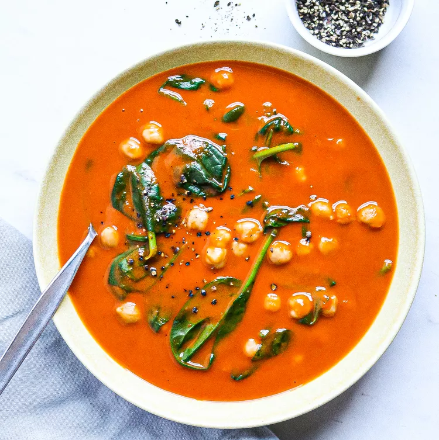

Pepper Soup with Chickpeas

Boxed blended soups are the perfect canvas for simple stir-ins to make
them more substantial and satisfying. Here, roasted red pepper soup is
jazzed up with canned chickpeas and fresh baby spinach for a fast,
comforting meal.
Ingredients
- 1 (32-ounce) carton low-sodium roasted red pepper soup
- 1 (15 ounce) can no-salt-added chickpeas, rinsed
- 3 cups baby spinach
Steps
-
Bring roasted red pepper soup to a simmer in a medium saucepan over
medium heat.
-
Stir in chickpeas and baby spinach; simmer until the spinach just wilts,
about 1 minute.
- Serve topped with freshly cracked black pepper, if desired.
Source
TOP | Foundations |
Recipes